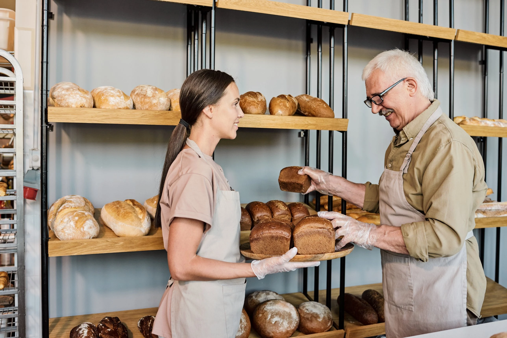
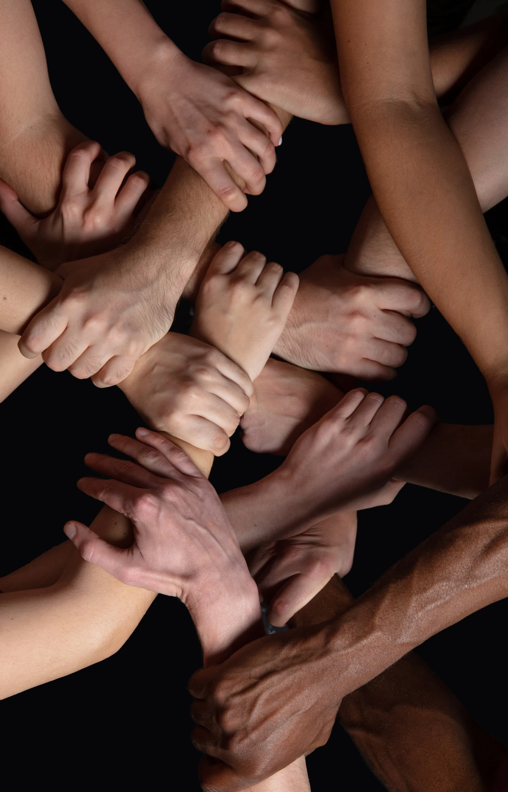
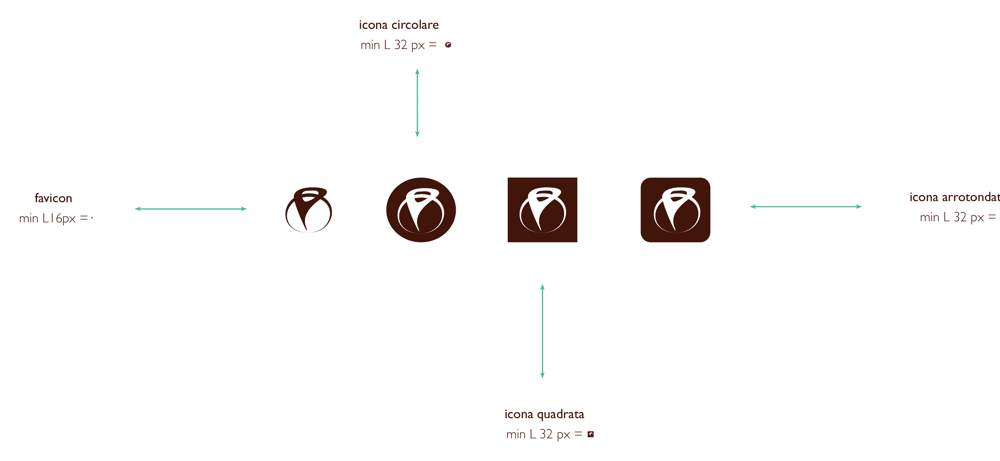
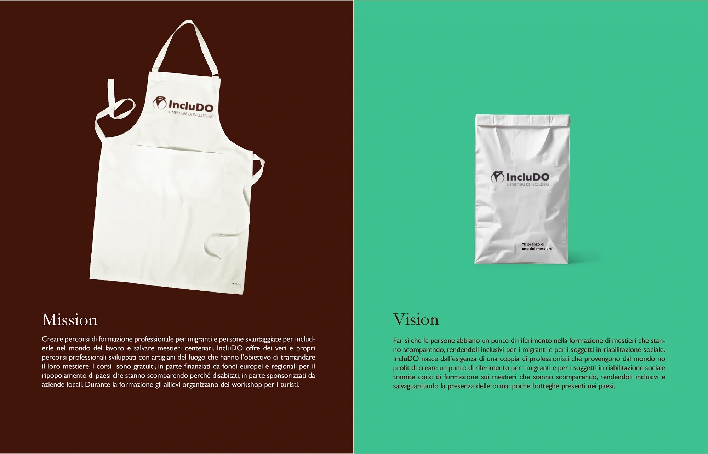
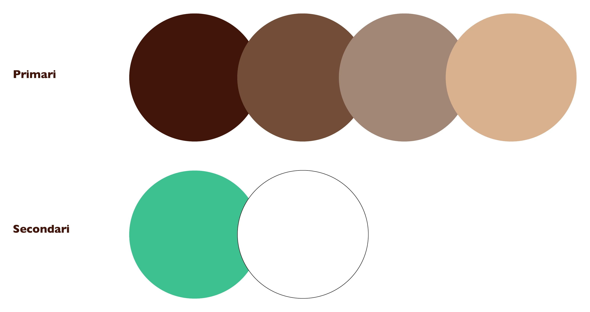
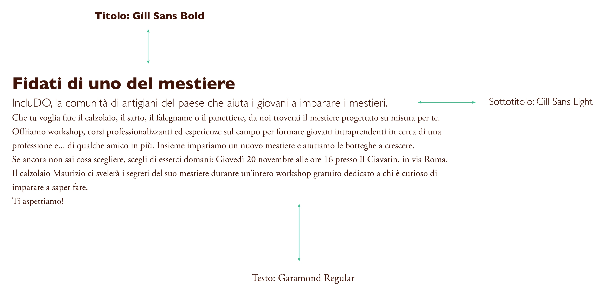
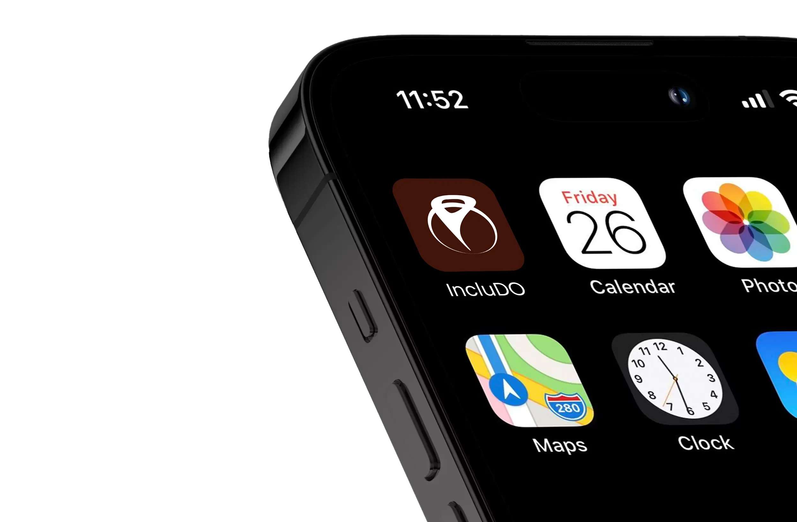
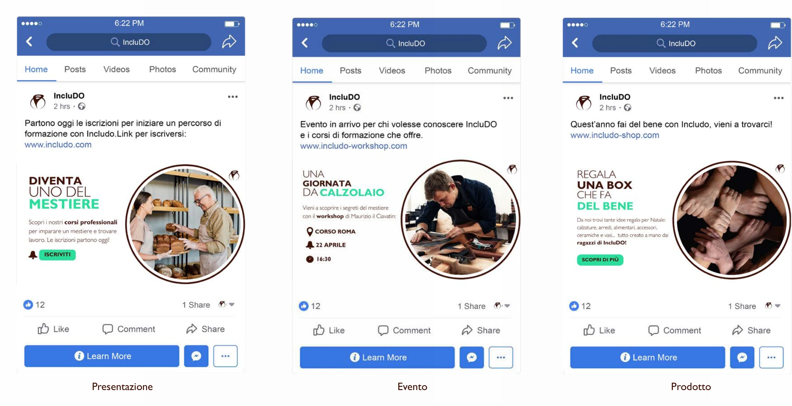
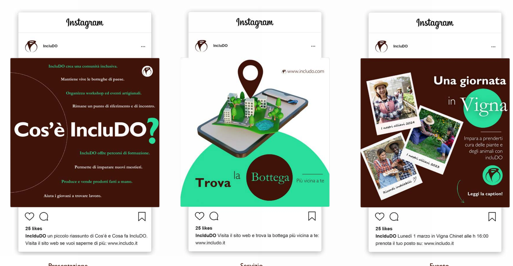

IncluDO
Brand guidelines e identità visiva
Il mestiere di includere: un'identità per chi insegna a fare e per chi ricomincia imparando.
Mission e Vision
Mission
Creare percorsi di formazione professionale
per migranti e persone svantaggiate per includerle nel mondo del lavoro e
salvare mestieri centenari.
IncluDO offre dei veri e propri percorsi professionali sviluppati con artigiani del luogo che hanno l'obiettivo di tramandare il loro mestiere. I corsi sono gratuiti, in parte finanziati da fondi europei e regionali per il ripopolamento di paesi che stanno scomparendo perché disabitati, in parte sponsorizzati da aziende locali. Durante la formazione gli allievi organizzano dei workshop per i turisti.
Vision
Far sì che le persone abbiano un punto di riferimento
nella formazione di mestieri che stanno scomparendo, rendendoli inclusivi per
i migranti e per i soggetti in riabilitazione sociale.
IncluDO nasce dall'esigenza di una coppia di professionisti che provengono dal mondo no profit di creare un punto di riferimento per i migranti e per i soggetti in riabilitazione sociale tramite corsi di formazione sui mestieri che stanno scomparendo, rendendoli inclusivi e salvaguardando la presenza delle ormai poche botteghe presenti nei paesi.


Sviluppo del logo
Manualità : Ago = Unione : Filo
Il logo deriva da una mia associazione tra il termine unione, che rispecchia la mission dell'ente, ovvero creare una comunità inclusiva che permetta ai giovani migranti e alle persone più svantaggiate di sentirsi parte della società e di stare insieme, e il termine manualità, ciò che contraddistingue i tradizionali mestieri centenari, perché la loro salvaguardia è la vision dell'ente.
Partendo dunque da ago e filo, un'immagine che rappresenta entrambi i termini (unione e manualità) ho creato il logo di IncluDO. La semplificazione del logo rende l'ago e il filo due elementi dalla forma circolare che trasmette sicurezza, armonia e connessione.
Con questo logo ho voluto esprimere la necessità di ricucire. Ricucire il legame tra società e tradizione, ricucire il rapporto tra i giovani e il lavoro, ricucire la connessione tra le botteghe di paese e i negozi di città, ricucire il bisogno di imparare a fare con la volontà di insegnare a fare.

Color Palette


Tipografia
Gill Sans
Titoli e sottotitoli.
Garamond
Testi.

Icone
Icone testimonianze
In aggiunta ho progettato due ulteriori icone che rimandano a dei video per permettere di familiarizzare e comprendere meglio le esperienze che si possono vivere con IncluDO: l'icona video per le testimonianze degli artigiani che raccontano i loro workshop, mentre l'omino per le testimonianze dei giovani che si sono affidati a IncluDO e che ora lavorano.
Trova la bottega più vicina a te
Col fine di favorire la rinascita delle botteghe dei paesi, evidenzierei la loro visibilità tramite una mappa sul sito che aiuta ad orientarsi e trovare la bottega artigianale più utile e vicina per il cliente in quel momento. Quindi ho creato l'icona Trova la bottega più vicina a te: l'ago del logo si trasforma in un indicatore di mappa.

Social media

